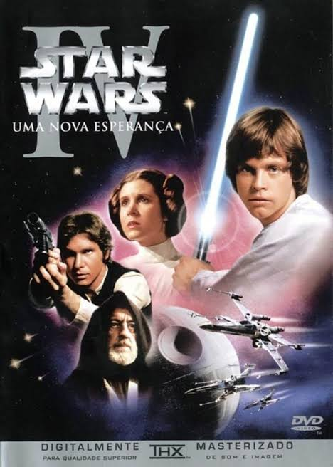
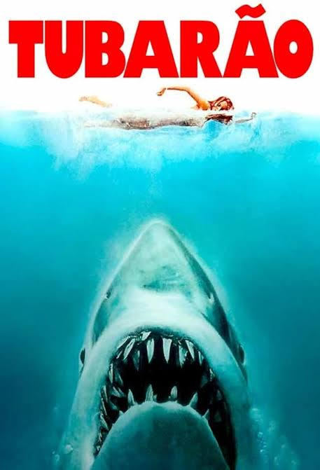
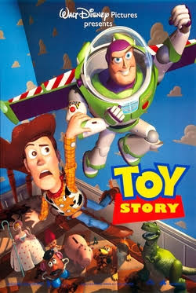
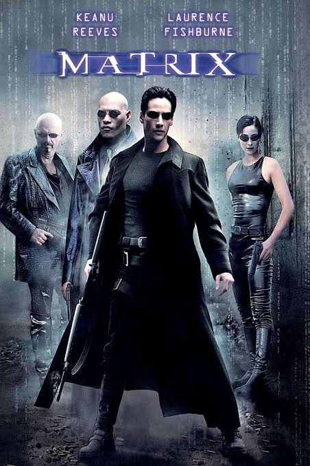
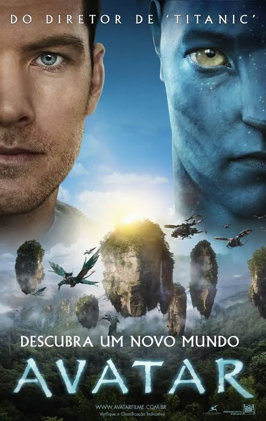
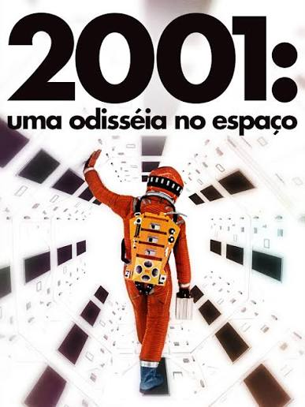
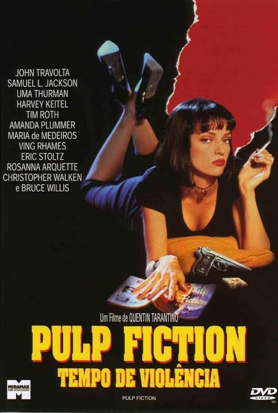
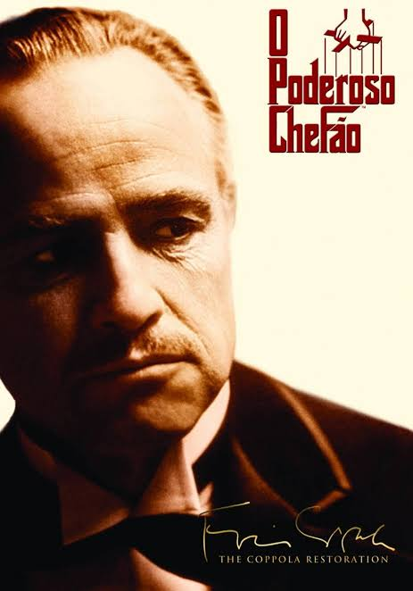
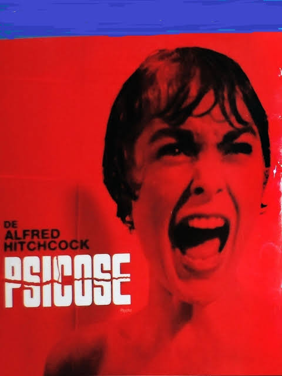

1977Star Wars: Episódio IV – Uma Nova Esperança
★ 8.6
Hollywood
Luke Skywalker se junta a Leia Organa, Han Solo e Obi-Wan Kenobi para enfrentar o Império Galáctico...

1977Luke Skywalker se junta a Leia Organa, Han Solo e Obi-Wan Kenobi para enfrentar o Império Galáctico...

1975Um enorme tubarão começa a atacar uma cidade litorânea, levando o chefe de polícia e um caçador...

1995Woody, um boneco cowboy, vê sua posição como brinquedo favorito ameaçada quando o novo astronauta Buzz...

1999Neo descobre que a realidade em que vive é uma simulação criada por máquinas e passa a lutar...

2009O ex-marine Jake Sully chega ao planeta Pandora e se envolve com os Na'vi enquanto começa...

1968Uma missão espacial para investigar um misterioso monólito leva humanos a uma jornada que envolve inteligência artificial...

1994Diferentes histórias de criminosos, assaltantes e pessoas envolvidas no mundo do crime se conectam...

1972A saga da família Corleone e a transformação do jovem Michael Corleone na liderança do império...

1960Marion Crane foge após roubar dinheiro e se hospeda em um hotel isolado, onde conhece o misterioso Norman Bates...